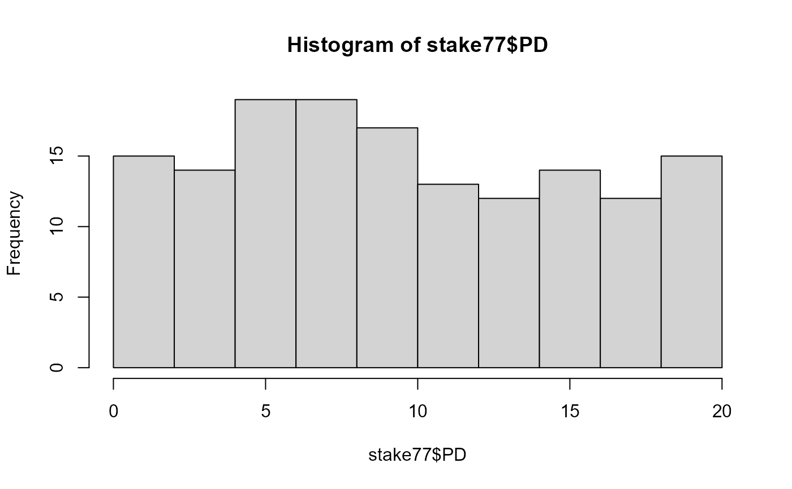
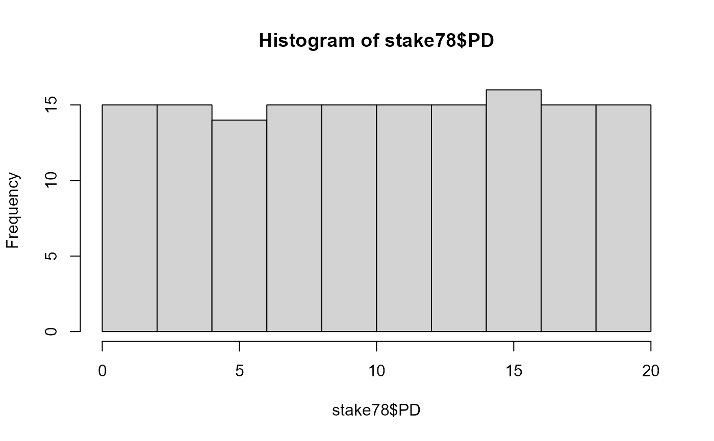
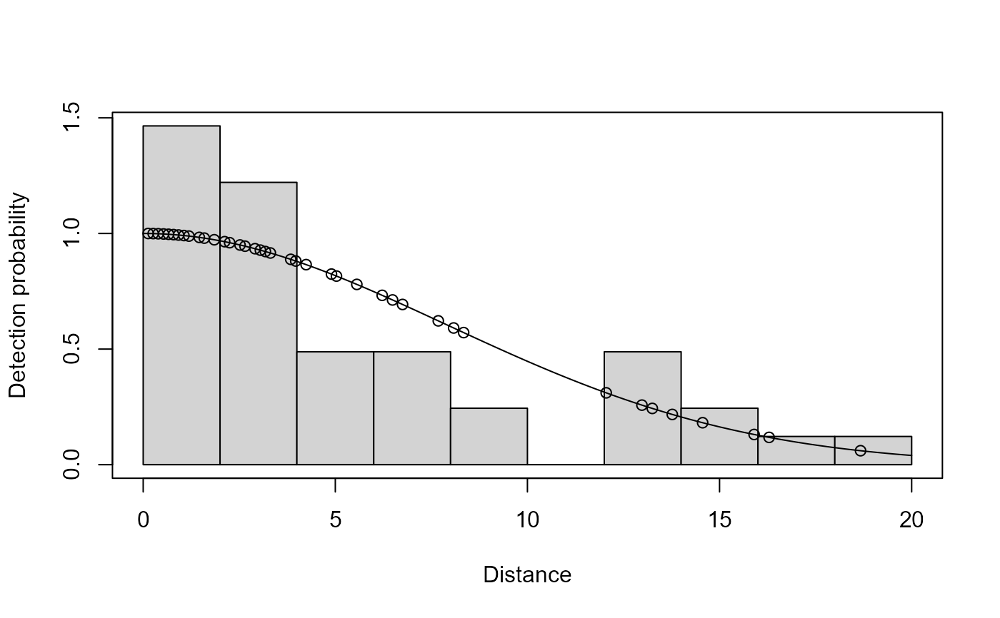
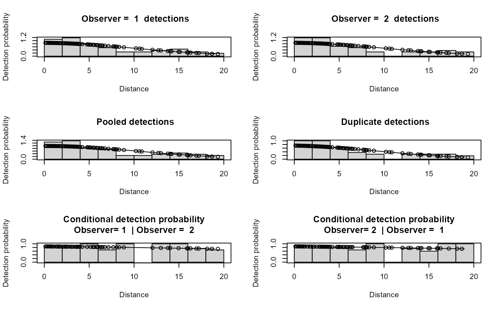

Multiple surveys by different observers of a single 1km transect containing 150 wooden stakes placed based on expected uniform distribution throughout a 40 m strip (20m on either side).
Format
A data frame with 150 observations on the following 13 variables.
- StakeNo
unique number for each stake 1-150
- PD
perpendicular distance at which the stake was placed from the line
- Obs1
0/1 whether missed/seen by observer 1
- Obs2
0/1 whether missed/seen by observer 2
- Obs3
0/1 whether missed/seen by observer 3
- Obs4
0/1 whether missed/seen by observer 4
- Obs5
0/1 whether missed/seen by observer 5
- Obs6
0/1 whether missed/seen by observer 6
- Obs7
0/1 whether missed/seen by observer 7
- Obs8
0/1 whether missed/seen by observer 8
- Obs9
0/1 whether missed/seen by observer 9
- Obs10
0/1 whether missed/seen by observer 10
- Obs11
0/1 whether missed/seen by observer 11
Source
Laake, J. 1978. Line transect estimators robust to animal movement. M.S. Thesis. Utah State University, Logan, Utah. 55p.
Details
The 1997 survey was based on a single realization of a uniform distribution. Because it was a single transect and there was no randomization of the distances for each survey, we repeated the experiment and used distances that provided a uniform distribution but randomly sorted the positions along the line so there was no pattern obvious to the observer.
References
Burnham, K. P., D. R. Anderson, and J. L. Laake. 1980. Estimation of Density from Line Transect Sampling of Biological Populations. Wildlife Monographs:7-202.
Examples
# \donttest{
data(stake78)
data(stake77)
# compare distribution of distances for all stakes
hist(stake77$PD)

hist(stake78$PD)

# Extract stake data and put in the mrds format for model fitting.
extract.stake <- function(stake,obs){
extract.obs <- function(obs){
example <- subset(stake,eval(parse(text=paste("Obs",obs,"==1",sep=""))),
select="PD")
example$distance <- example$PD
example$object <- 1:nrow(example)
example$PD <- NULL
return(example)
}
if(obs!="all"){
return(extract.obs(obs=obs))
}else{
example <- NULL
for(i in 1:(ncol(stake)-2)){
df <- extract.obs(obs=i)
df$person <- i
example <- rbind(example,df)
}
example$person <- factor(example$person)
example$object <- 1:nrow(example)
return(example)
}
}
extract.stake.pairs <- function(stake,obs1,obs2,removal=FALSE){
obs1 <- paste("Obs",obs1,sep="")
obs2 <- paste("Obs",obs2,sep="")
example <- subset(stake,eval(parse(text=paste(obs1,"==1 |",obs2,"==1 ",
sep=""))), select=c("PD",obs1,obs2))
names(example) <- c("distance","obs1","obs2")
detected <- c(example$obs1,example$obs2)
example <- data.frame(object=rep(1:nrow(example),2),
distance=rep(example$distance,2),
detected = detected,
observer=c(rep(1,nrow(example)),
rep(2,nrow(example))))
if(removal) example$detected[example$observer==2] <- 1
return(example)
}
# extract data for observer 10 and fit a single observer model
stakes <- extract.stake(stake78,10)
ds.model <- ddf(dsmodel = ~mcds(key = "hn", formula = ~1), data = stakes,
method = "ds", meta.data = list(width = 20))
plot(ds.model,breaks=seq(0,20,2),showpoints=TRUE)

ddf.gof(ds.model)
#>
#> Goodness of fit results for ddf object
#>
#> Chi-square tests
#> [0,3.33] (3.33,6.67] (6.67,10] (10,13.3] (13.3,16.7] (16.7,20] Total
#> Observed 20.000 8.000 4.000 3.000 4.000 1.000 40.000
#> Expected 13.254 11.113 7.812 4.604 2.275 0.942 40.000
#> Chisquare 3.433 0.872 1.860 0.559 1.308 0.004 8.036
#>
#> P = 0.090283 with 4 degrees of freedom
#>
#> Distance sampling Cramer-von Mises test (unweighted)
#> Test statistic = 0.342811 p-value = 0.10286
# extract data from observers 5 and 7 and fit an io model
stkpairs <- extract.stake.pairs(stake78,5,7,removal=FALSE)
io.model <- ddf(dsmodel = ~mcds(key = "hn", formula=~1),
mrmodel=~glm(formula=~distance),
data = stkpairs, method = "io")
#> Warning: no truncation distance specified; using largest observed distance
summary(io.model)
#>
#> Summary for io.fi object
#> Number of observations : 68
#> Number seen by primary : 60
#> Number seen by secondary : 55
#> Number seen by both : 47
#> AIC : 116.2709
#>
#>
#> Conditional detection function parameters:
#> estimate se
#> (Intercept) 1.81859268 0.43467528
#> distance -0.04485342 0.04688151
#>
#> Estimate SE CV
#> Average primary p(0) 0.8603972 0.05221053 0.06068190
#> Average secondary p(0) 0.8603972 0.05221053 0.06068190
#> Average combined p(0) 0.9805111 0.01457748 0.01486722
#>
#>
#> Summary for ds object
#> Number of observations : 68
#> Distance range : 0 - 19.34
#> AIC : 391.1836
#> Optimisation : mrds (nlminb)
#>
#> Detection function:
#> Half-normal key function
#>
#> Detection function parameters
#> Scale coefficient(s):
#> estimate se
#> (Intercept) 2.340436 0.1284981
#>
#> Estimate SE CV
#> Average p 0.6309225 0.05837871 0.09252913
#>
#>
#> Summary for io object
#> Total AIC value : 507.4545
#>
#> Estimate SE CV
#> Average p 0.6186265 0.05797515 0.09371592
#> N in covered region 109.9209291 13.18643833 0.11996294
par(mfrow=c(3,2))
plot(io.model,breaks=seq(0,20,2),showpoints=TRUE,new=FALSE)

ddf.gof(io.model)
#>
#> Goodness of fit results for ddf object
#>
#> Chi-square tests
#>
#> Distance sampling component:
#> [0,2.76] (2.76,5.53] (5.53,8.29] (8.29,11.1] (11.1,13.8] (13.8,16.6]
#> Observed 19.000 16.000 12.000 5.000 4.000 7.000
#> Expected 15.217 14.183 12.322 9.977 7.530 5.297
#> Chisquare 0.940 0.233 0.008 2.483 1.655 0.548
#> (16.6,19.3] Total
#> Observed 5.000 68.000
#> Expected 3.473 68.000
#> Chisquare 0.671 6.538
#>
#> P = 0.25731 with 5 degrees of freedom
#>
#> Mark-recapture component:
#> Capture History 10
#> [0,2.76] (2.76,5.53] (5.53,8.29] (8.29,11.1] (11.1,13.8] (13.8,16.6]
#> Observed 1 4 2 3 1 2
#> Expected 2 2 2 1 1 1
#> Chisquare 1 1 0 6 0 0
#> (16.6,19.3] Total
#> Observed 0 13
#> Expected 1 10
#> Chisquare 1 9
#> Capture History 01
#> [0,2.76] (2.76,5.53] (5.53,8.29] (8.29,11.1] (11.1,13.8] (13.8,16.6]
#> Observed 4 0 2 0 0 0
#> Expected 2 2 2 1 1 1
#> Chisquare 1 2 0 1 1 1
#> (16.6,19.3] Total
#> Observed 2 8
#> Expected 1 10
#> Chisquare 1 7
#> Capture History 11
#> [0,2.76] (2.76,5.53] (5.53,8.29] (8.29,11.1] (11.1,13.8] (13.8,16.6]
#> Observed 14 12 8 2 3 5
#> Expected 14 12 8 3 3 4
#> Chisquare 0 0 0 1 0 0
#> (16.6,19.3] Total
#> Observed 3 47
#> Expected 3 47
#> Chisquare 0 1
#>
#> MR total chi-square = 17.108 P = 0.1456 with 12 degrees of freedom
#>
#>
#> Total chi-square = 23.646 P = 0.12938 with 17 degrees of freedom
#>
#> Distance sampling Cramer-von Mises test (unweighted)
#> Test statistic = 0.246294 p-value = 0.19319
# }